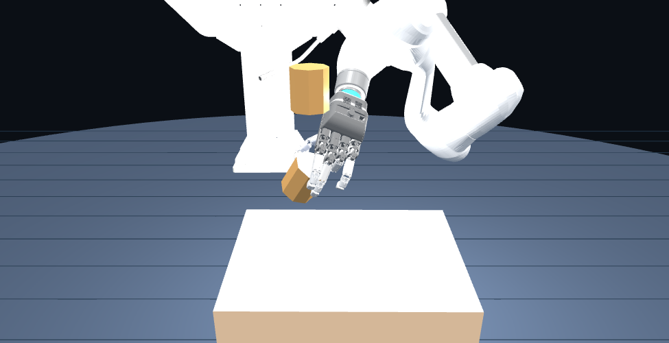

Isaac Sim
AIDIN model · Contact pads
Measured table · 20 mm spacer
Learning grasping and lifting through interaction in simulation. Explore the policy rollouts and the hand models that support transfer to a real AIDIN robotic hand.

Bring robot geometry and contact conditions into training. Connect object estimates and joint feedback to the policy.
AIDIN model · Contact pads
Measured table · 20 mm spacer
Object, hand and goal observations
Grasp, lift and sustained support rewards
Preserved checkpoints
Rollout evaluation under matching conditions
D455 · SAM3 · FoundationPose
Object pose + Robot joint feedback
Relative object and goal observations
60 Hz execution configuration
ROS bridge · Target limits
6 arm + 15 hand joints → Joint feedback
Initial hardware execution used the ep50k policy. The ep100k results below are simulation recordings. Deploying the latest policy and measuring repeated hardware success remain future work.
4 families · 8 training assets total 80k / 90k / 100k × 2 environments per family 24 saved rollouts · 600 steps each
These saved trajectories are comparisons, not a quantitative study of success rates or generalization to unseen objects.
Explore joint reachability, the slider mechanism, and contact pads through synchronized model studies. These recordings explain the model used around the learning system.
Move the index finger or thumb. Overlay fingertip trajectories from independent joint limits and the existing reachability table.
Common motion produces pitch; a difference produces roll. An original finger mounted at the mechanism output shows when commands reach the model limits.
Pivots, attachment points and rod lengths are reconstructed from the vendor kinematic dimensions and equations. LM guide, block and support shapes are illustrative. The original four finger links are mounted at the MCP output pivot after aligning mechanism and URDF coordinates. The hand and mounted finger share the same orientation and joint motion. This placement is explanatory, not a reconstruction of measured internal mounting CAD.
The existing constraint model includes slider stroke, differential travel and the valid kinematic domain. These limits do not all imply physical collisions at the LM guide ends. The differential envelope comes from earlier right-hand logs; its correspondence to physical interference in the current left hand is unverified. This view uses left-hand calibration for a kinematic explanation. Physical dimensions and interference require separate validation.
Dimensions · Calculated motion · Sources ↗Keep the palm and all five fingers open. Release the same large object from the same height, and compare contact pads at the selected inclination.
The entire hand stays open (q=0), fixed at the selected angle from the start; the default is −15°. The object is centered over the middle and distal segments of the four fingers, with its base parallel to the hand. Both conditions share the same palm and finger collision shells. ON adds 15 pad colliders and high-friction material.
This passive drop-and-support test fixes the original left palm and five fingers in the open pose (q=0). Initial object pose, mass, clearance, gravity and hand motion are identical. Only ON adds the original 15 convex pad hulls and high-friction material. The experiment does not test active grasping or physical joint compliance.
MuJoCo uses its default friction combination rule (shell–object 0.5, pad–object 1.5); contact calculations differ from Isaac/PhysX. An object is marked retained if it avoids the floor for 6 seconds and ends in contact with the hand with its center above 100 mm.
Trajectories · Contacts · Source hashes ↗